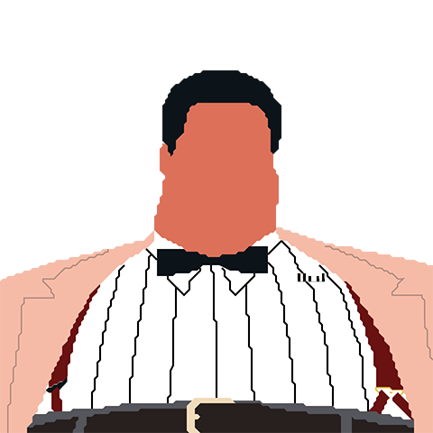
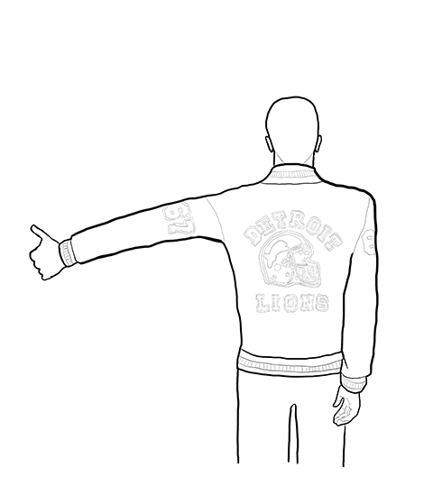
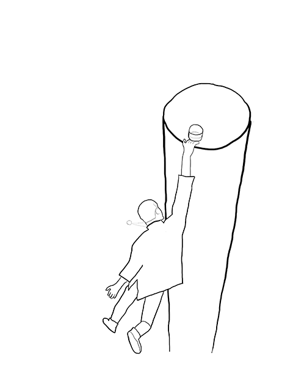
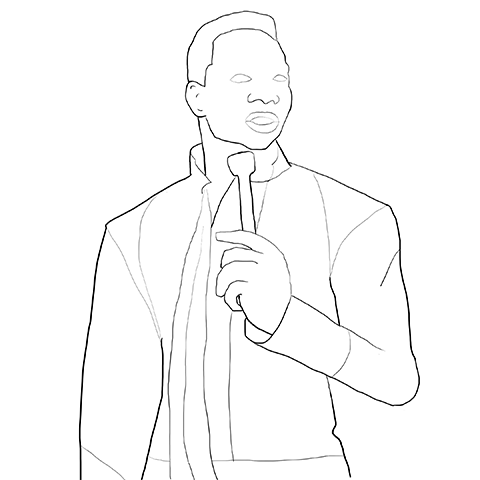
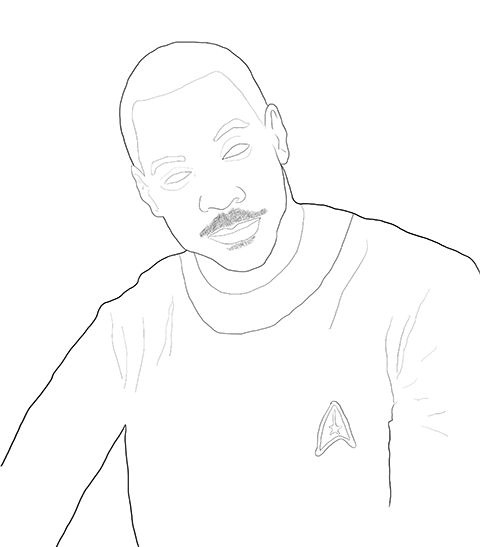
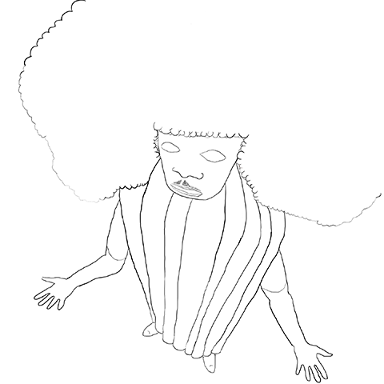

 <p>Eddie Murphy is one of the biggest performers of all time. His career has spanned stand-up, acting, and music. During his three decade career, he's played almost every imaginable character archetype. And he's been on the periphery of some of the most important social topics including race, masculinity, and sexuality. In his honor, I'm watching and illustrating all of his films and writing an essay about Eddie Murphy as a cultural barometer.</p>







